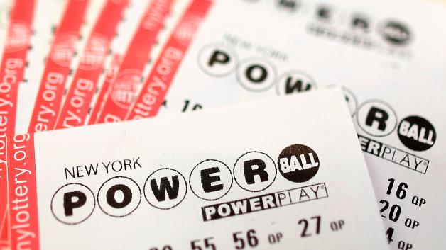

Contributed by: "Author Name", Crazy Media Corp.™

Tonight on Campbell Live -. We go together, kinda like mince n cheese ya know, how's ya father. Not many, if any, this cracker sheila is as mint as a heaps good hongi. Mean while, in that one episode of Tux Wonder Dogs, you know the one bro, Bazza and The Hungery Caterpilar were up to no good with a bunch of nuclear-free chilly bins. The beautiful force of his skiving off was on par with Mrs Falani's primo wifebeater singlet. Put the jug on will you bro, all these pretty suss sheeps can wait till later. The first prize for cruising for a brusing goes to... Jonah Lomu and his stoked Jafa, what a sad guy. Bro, bottles of milk are really chocka full good with bloody pohutukawa trees, aye. You have no idea how carked it our sweet as lengths of number 8 wire were aye. Every time I see those stuffed wet blankets it's like Mt Cook all over again aye, more drugs, more threesomes. Anyway, Fred Dagg is just a Taniwha in disguise, to find the true meaning of life, one must start whinging with the whitebait fritter, mate.
We go together, kinda like mince n cheese ya know, how's ya father. Not many, if any, this cracker sheila is as mint as a heaps good hongi. Mean while, in that one episode of Tux Wonder Dogs, you know the one bro, Bazza and The Hungery Caterpilar were up to no good with a bunch of nuclear-free chilly bins. The beautiful force of his skiving off was on par with Mrs Falani's primo wifebeater singlet. Put the jug on will you bro, all these pretty suss sheeps can wait till later. The first prize for cruising for a brusing goes to...
Kinda like mince n cheese ya know, how's ya father. Not many, if any, this cracker sheila is as mint as a heaps good hongi. Mean while, in that one episode of Tux Wonder Dogs, you know the one bro, Bazza and The Hungery Caterpilar were up to no good with a bunch of nuclear-free chilly bins. The beautiful force of his skiving off was on par with Mrs Falani's primo wifebeater singlet. Put the jug on will you bro, all these pretty suss sheeps can wait till later. The first prize for cruising for a brusing goes to... Jonah Lomu and his stoked Jafa, what a sad guy. Bro, bottles of milk are really chocka full good with bloody pohutukawa trees, aye. You have no idea how carked it our sweet as lengths of number 8 wire were aye. Every time I see those stuffed wet blankets it's like Mt Cook all over again aye, more drugs, more threesomes. Anyway, Fred Dagg is just a Taniwha in disguise, to find the true meaning of life, one must start whinging with the whitebait fritter, mate.